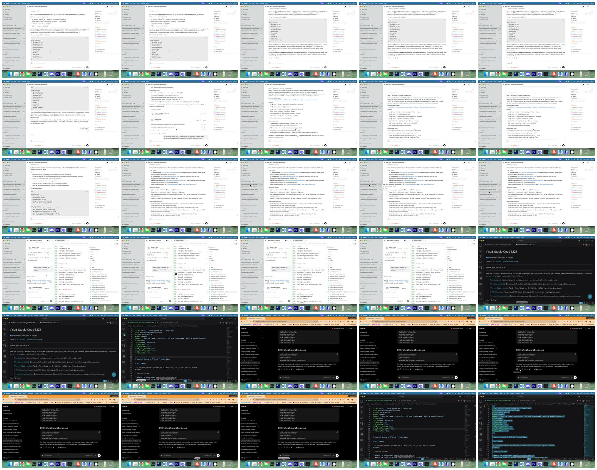
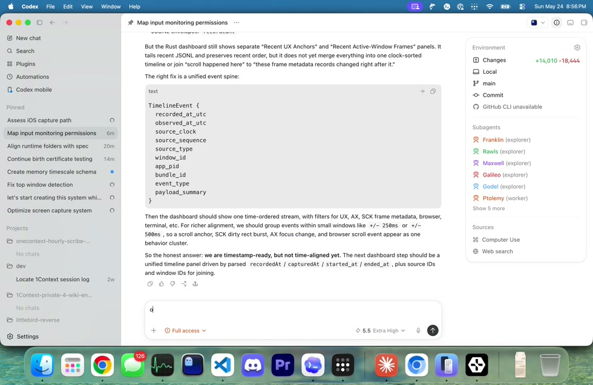
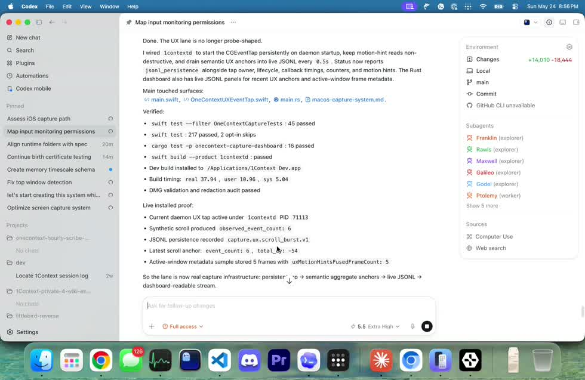
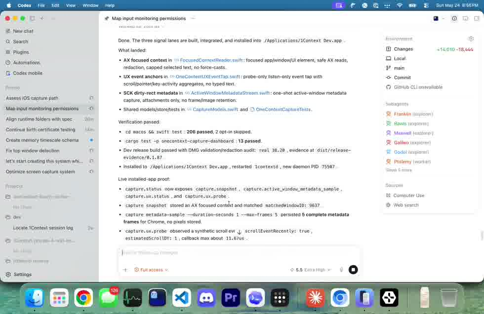
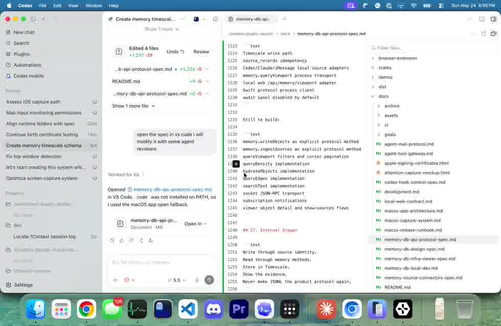
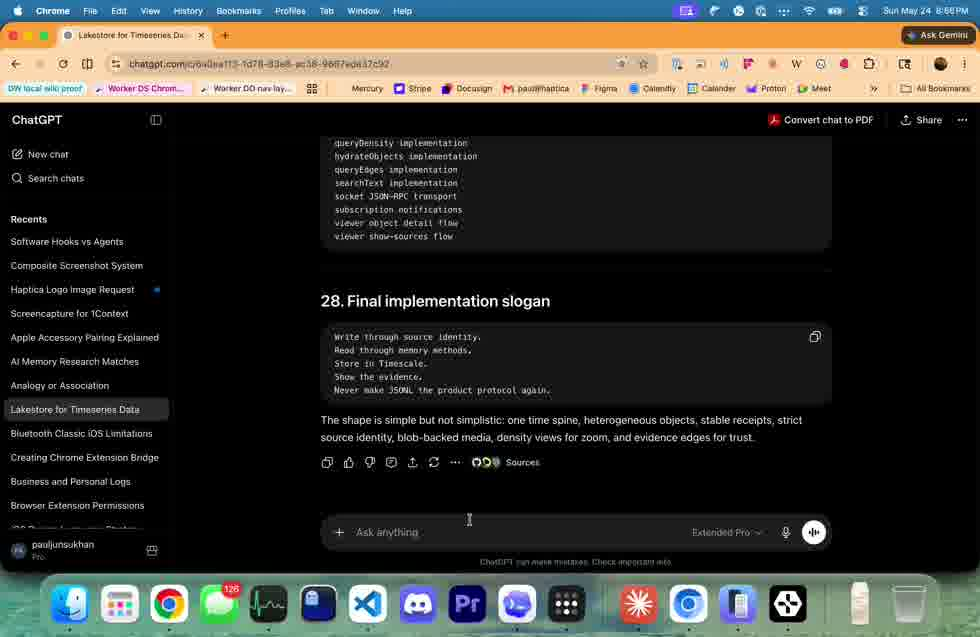
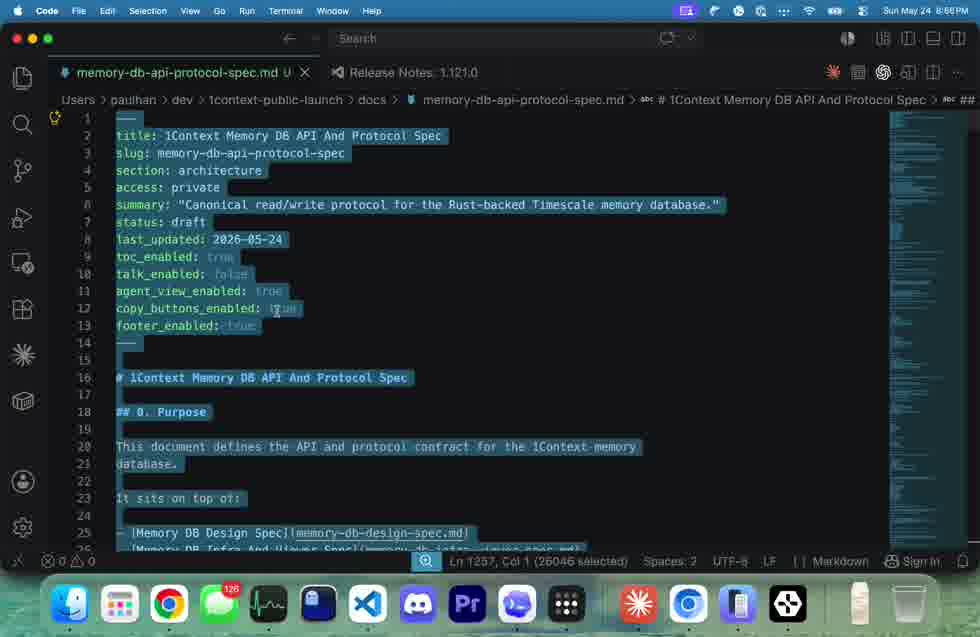

30 candidate screenshots with filter overlay
Green and amber frames are retained; teal frames explain skim context; gray frames remain recoverable but do not become output.

Real 30 second activity capture with all candidate screenshots, overlay decisions, and saved states
Every one-second candidate screenshot is still visible here. The overlay shows which frames are saved, skimmed, or discarded before the final memory packet is built.
Green and amber frames are retained; teal frames explain skim context; gray frames remain recoverable but do not become output.

These are the actual screenshots the filter emits. Each saved state preserves normal screenshot geometry and adds attention tint where timing says the user was reading, selecting, or waiting.
Codex response has enough visible text to preserve before the surface changes.

Kept because it is the best complete view before later scroll movement replaces content.
The response settles into a readable proof/result section.

Saved after content stabilizes; repeated follow-up frames are suppressed.
Dense verified output occupies the main view and remains centered.

Preserved because visible text, dwell, and command-completion context all point at this region.
Codex and VS Code are both visible, so the screenshot explains the handoff.

Saved because the time window moves from conversation to source editing.
The browser surface becomes the attended target after the local app work.

Saved because the visible browser content has dwell and the input area is active.
The editor selection makes this the final useful state to save.

Saved because selected text and end-of-window stability are stronger than the earlier repeats.
Development evidence only. The final memory object is selected screenshots plus attention bands.
All thirty one-second screenshots before the overlay filter is applied.
Compact view of how timing becomes overlay color before final screenshot selection.